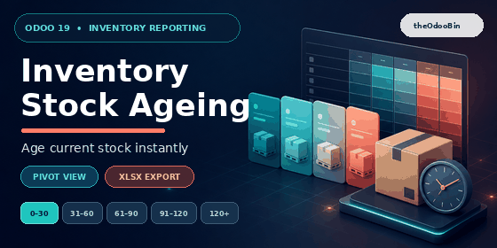
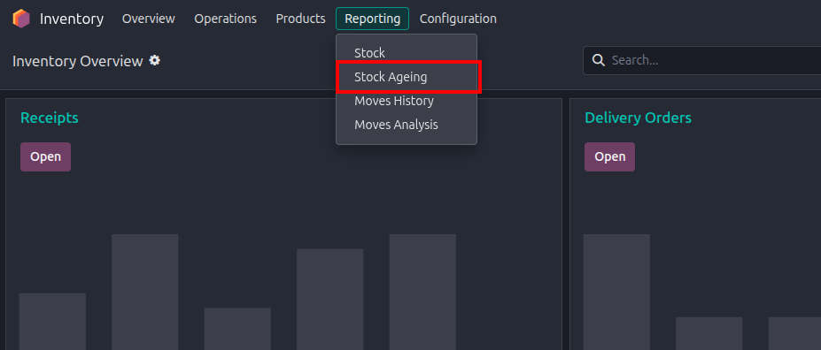
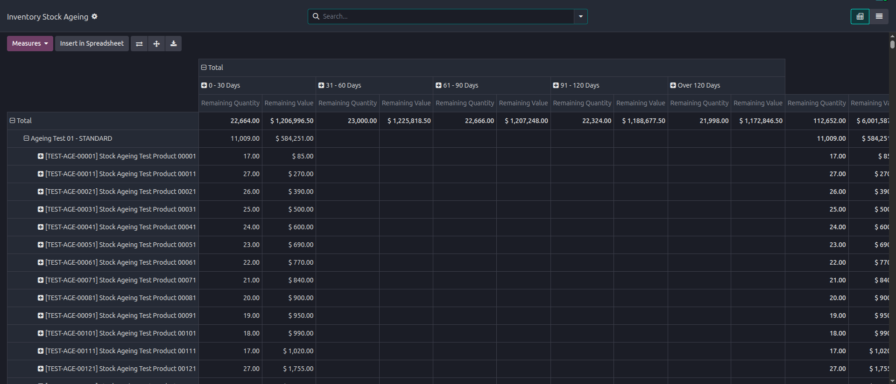

|
|
Odoo 19 Inventory Reporting
Inventory Stock Ageing
Understand how long current inventory has remained in stock with an interactive pivot report for quantities and values. |

Follow current stock across five ageing buckets, from recent receipts to inventory older than 120 days.
Open Stock Ageing from the Inventory reporting menu and analyse current stock directly in the pivot view.

Access the report from Inventory > Reporting > Stock Ageing.

Review remaining quantity and value by category, product, and ageing bucket.
|
Pivot-first Analysis
Opens directly in a pivot view, with product category and product on rows and ageing buckets across columns. |
Quantity and Value
Compare remaining quantities and inventory values using company currency and product unit-of-measure precision. |
|
Download to XLSX
Use Odoo's standard pivot download option to continue analysis, share results, or archive the current snapshot in Excel. |
Secure Multi-company Data
Generates a private snapshot for the logged-in Inventory Manager and includes only companies currently allowed for that user. |
| 0 - 30 Days | 31 - 60 Days | 61 - 90 Days | 91 - 120 Days | Over 120 Days |
- Install the module on Odoo 19 with Inventory Valuation available.
- Open Inventory > Reporting > Stock Ageing.
- Review quantity and value by product and ageing bucket in the pivot.
- Filter or regroup by category, product, receipt month, or company.
- Choose Download XLSX from the pivot whenever an offline copy is needed.
- Built specifically for Odoo 19 Community and Enterprise.
- Optimized for large catalogs with thousands of products.
- Supports FIFO, average cost, and standard cost products.
- Read-only reporting interface with no manual data maintenance.
- Detailed list view available alongside the pivot for receipt-level review.
- No external services or Python packages required.
For Inventory Stock Ageing support or customization requests, contact theodoobin@gmail.com.